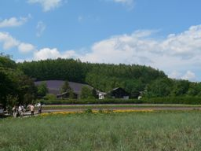
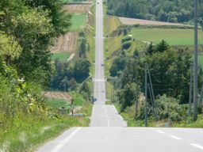

some where in the next town...

Furano
Furano in Hokkaido is famous in lavender fields. When I watched the image of all the lavender fields overlooked in a drama "Kita no kuni kara (from northern country)", I thought I wished to have a trip to Furano.
By good luck, I had an opportunity to visit Furano in the late 90s. With the help of a road map, my family aimed at the Tomita farm considered to be the location of the drama. There was surely the place where a lavender was planted in Tomita farm. However, the lavender was planted in the plot of the field. It was not a endless lavender field such as the drama. I looked for the pictures which took the lavender field, but was not able to find them. Probably I might not take pictures disappointedly.
In those days, the theme park called "Canadian world" was in Ashibetsu. I thought that the lavender field planted there was near to the image of "from northern country".


I visited Furano again about ten years later. The Tomita farm became excellent. The lavender field which I looked at in old days is this neighborhood. It is a plot of the central left purple of this picture. The lavender was planted everywhere as well as this place. These lavender fields were the same as the scene that I looked at in the drama. In this trip, I knew that there was a lavender field in each place of Furano.
Biei
When I visited first, I had come and returned to Furano. This time, I visited to Biei located in the north in Furano. In Biei, not flower gardens but the fields spread out. I had a plain image about Biei in comparison with Furano. Really I visited Biei, and the negative image has vanished completely. In Biei, hills and valleys were ranged endlessly. The fields which spread on complicated hills showed various expression according to the kinds of crops and their harvest condition.


Roller coaster's road
Biei opens in the hilly areas. They are hills full of ups and downs rather than gentle hills. It is symbolized to the "Roller coaster's road". The road is a straight road. However, it is a straight road accompanied by a surprising vertical interval. We went to the "Roller coaster's road" from the Bibaushi station side. When we went up the hill for a while, the field of view opened suddenly. It was a surprising spectacle. We had said severally, "Great!", brightening a face.

a view from Bibaushi side

a biew from Furano side
I reproduced an image of the "Roller Coaster's Rode" from two pictures above.
BIEI PANORAMA
from the "Roller Coaster's Rode"